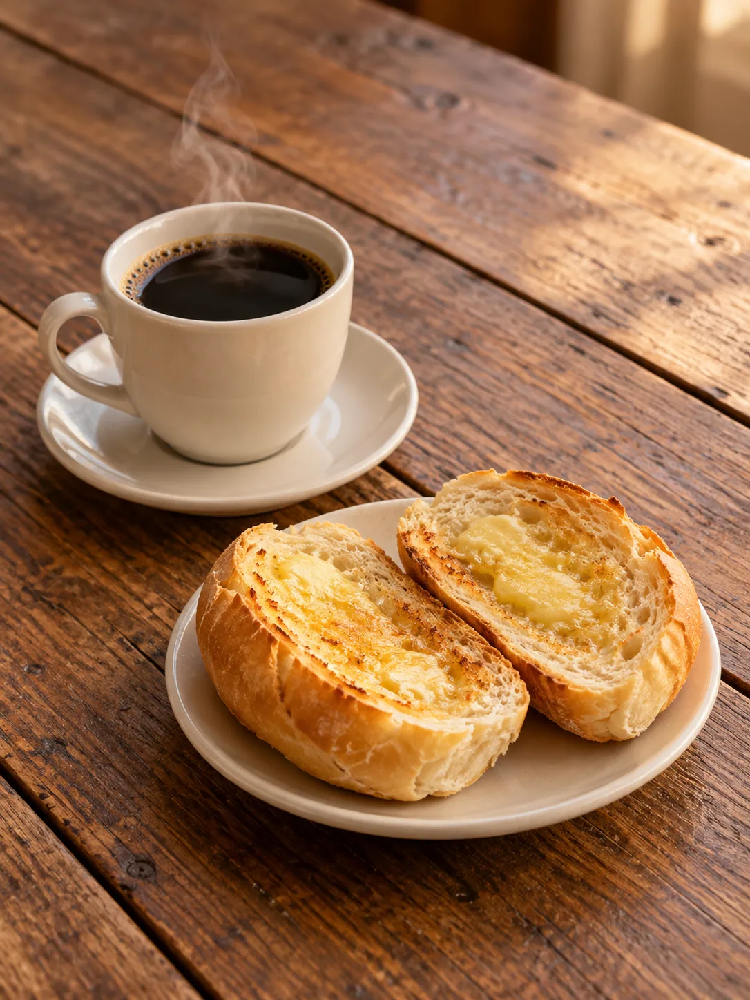

SUA PADOCA EM SÃO PAULO
Seu dia começamelhor na Padoca.
Uma pausa para o café. Uma mesa para reunir. Um sabor para querer voltar.
Av. Marechal Argolo Ferrão, 349
Jardim Guanca · São Paulo

Pão, café &
boas conversas.
bairro
PARA VOCÊ
BEM-VINDO À PADOCA
Desde 2010 diversificando o paladar
Mais que uma padaria.
Um ponto de encontro.
Do lanche à refeição, a Padoca do Bairro reúne opções para diferentes momentos do seu dia.
Escolha uma mesa, leve seu pedido para casa ou entre em contato para saber mais sobre a entrega. A próxima pausa pode ser aqui.
Encontre a gente ↗ESCOLHA SUA PRÓXIMA PAUSA
Tem sabor para
cada momento.
TEM LUGAR PARA VOCÊ
Desacelere.
Puxe uma cadeira.
Sinta-se no bairro.
Para um encontro, uma refeição ou uma pausa no caminho. Conheça a Padoca do Bairro e escolha como aproveitar seu momento.
Planeje sua visitaDa sua rotina.Foto da fachada em breve
Conheça a experiência
de quem já passou por aqui.
Veja as avaliações ↗O SEU PRÓXIMO DESTINO
Estamos logo ali.
Venha para a Padoca.
Av. Marechal Argolo Ferrão, 349
Jardim Guanca · São Paulo — SP
CEP 02139-000
AV. MARECHAL ARGOLO FERRÃO
Consulte o cardápio e a disponibilidade
por telefone ou WhatsApp.